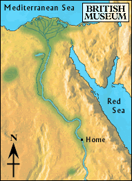

Fertile land

After many days of walking, the boy spotted green trees and a lake in the distance. The homes at the edge of the fields looked like small brown boxes.
The boy was tired, dusty, hungry and thirsty after his trip. He walked past the homes and through the freshly planted fields. Finally, he reached the lake.
He sat down on the shore and took a deep breath. He thought back on his adventure and all that he had seen. In a couple of days, he would be able to catch a boat which would take him home. Maybe he would find his brother on his way home. He lay back and went to sleep.